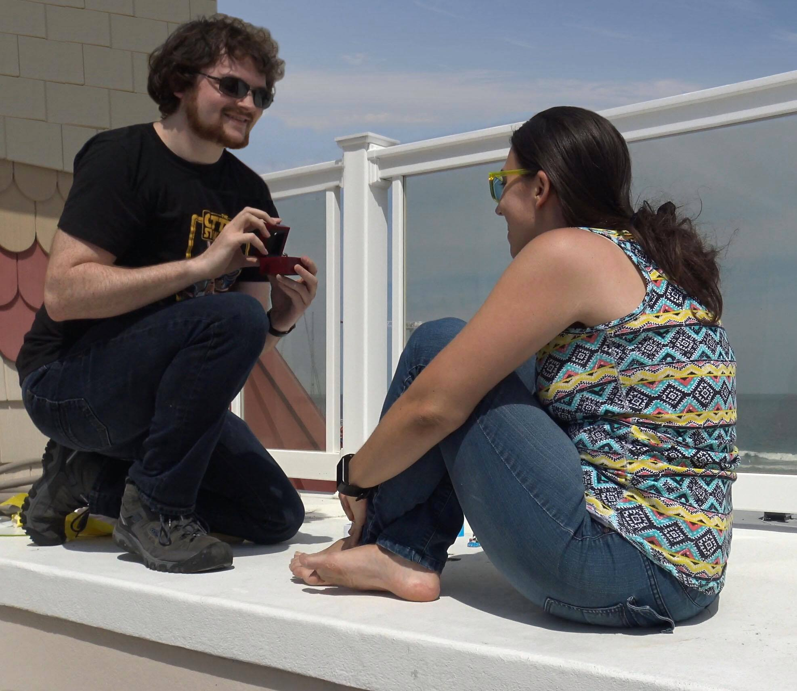

Our Story:
Tim and Victoria met in their freshman year at Stevens Institute of Technology. Tim couldn't take his eyes off of this beautiful woman who was in his Introduction to Humanities class. Victoria was confused by this scooter-riding boy who kept staring at her in class. One day after class got out early, Tim saw the perfect opportunity to make the approach. He walked over to her and started taking about the class. Eventually he worked up the courage to ask her if she wanted to go to the dining hall with him. She said yes (as she was currently walking towards the dining hall with the intention of going there in the first place…)
The two future soulmates sat together at a small table. Tim offered Victoria a plate of chicken nuggets, a Pierce Dining Hall specialty, but Victoria declined. She was a vegetarian. Tim said that was ok. Secretly he was happy he could eat all of the chicken nuggets. Secretly Victoria was happy too - Tim was the first person who hadn't mocked her vegetarianism.
That night, Tim decided that he wanted to ask Victoria out on their first real date. Rita's Italian Ice was celebrating the first day of spring with free Italian ice day. Tim nervously walked over to Victoria's table during their physics lab that night and asked her if she wanted to go after class. To his surprise, she said yes.
Victoria and Tim walked to Rita's in Hoboken and each got a cup of ice. Later, they walked together through Hoboken, stopping to sit on a bench in a park by the river. Tim was amazed that Victoria could talk so much. Victoria was amazed that Tim could eat so slowly.
After the smash success of their first date, the two began going on regular walks and going out to dinner together. One of their frequent spots was Aroma, a Chinese restaurant which was "decorated" with dead butterflies all over the walls. Was this leading somewhere?
Maybe not...
After a month or so of outings ("dates" to Tim, "awkward hangouts" to Victoria), Victoria told Tim that he was a great friend. Tim was sad and confused; he thought they were dating. Why else would she text him all the time? Well, Victoria was confused too; "is this what dating is really like?" Tim really liked Victoria, though, and figured, if he waited around long enough, maybe she would change her mind. How long could that take?
Two years later Tim and Victoria remained close, but were still just friends. They had continued to go on their "dates," but didn't call them that...
But now... something seemed different. Victoria seemed more flirty. More smiley. More cuddly. This confused Tim greatly. Particularly one night when they were at a party together and Victoria kept putting her arms around him. Around midnight, the partygoers were hungry and decided to go to Planet Mac to get something to eat. Victoria sat in a booth across from Tim. She couldn't stop smiling. Tim smiled back. What was on her mind?
Finally she spoke, "You know... If you still want to date me, I'll allow it."
"Oh my god how much have you had to drink?" said Tim… just not out loud.
Tim smiled and took Victoria's hand. He gave it a small kiss.
"Is that a yes?" asked Victoria, still smiling her beautiful smile.
"Yes" Tim smiled back.
This was the moment Tim had waited two years for... It was worth the wait.
Tim and Victoria continued dating throughout the remainder of their time at Stevens. When it came time for Victoria to enter her PhD program at Texas A&M University, Tim worried how the couple would stay together over such a long distance. Although nervous, he eventually agreed to stay in a long-distance relationship; this time it was Victoria taking the lead to keep them together.
Long distance obviously wasn't an ideal scenario, but the couple made it work. They did their best to do couples activities together over long distance. They would watch TV together, counting down to start their show at the same time so they could both experience it together. They played video games together online. They took the time to plan trips together and times to see each other. They talked every night over video chat, even falling asleep on calls together. Even though the distance between them was great, they grew closer every day.
As the couple approached the four year mark of being together, Tim decided that he wanted to ask Victoria to marry him. Everything had to be perfect. Some generic, off-the-shelf ring would never be good enough for his love, so he commissioned a special ring from a designer in Manhattan's famous Diamond District. The basic design of the ring was inspired by the tentacle of an octopus, Victoria's favorite animal. The ring would feature two octopus tentacles, each holding a colorful stone in the couples favorite colors representing the two of them. The tentacles would then wrap around a center diamond symbolizing their love. The ring was placed in a box, and then that box in another box, and that box in another, and so on. In total there were twelve boxes, each containing a small note card with a cute drawing and a written piece of Tim's marriage proposal. Tim set up the box on the roof of his family's condo in Seaside Heights, New Jersey, knowing that the ocean was Victoria's favorite place in the world.
Victoria opened each box and read the note cards with Tim, the whole time holding back tears of joy and stopping along the way to take a selfie or two. As she got to the last box, Tim got down on one knee and said the words…
"Victoria Albright, will you marry me?”
"Yes!" Victoria eagerly squealed tackling Tim to the ground. They were engaged on May 11th 2018.
